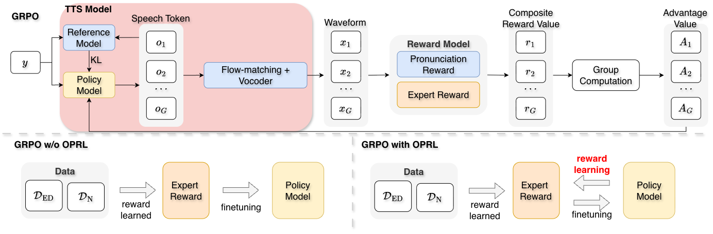
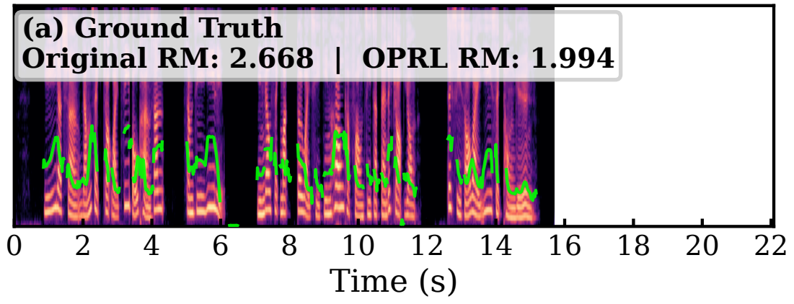
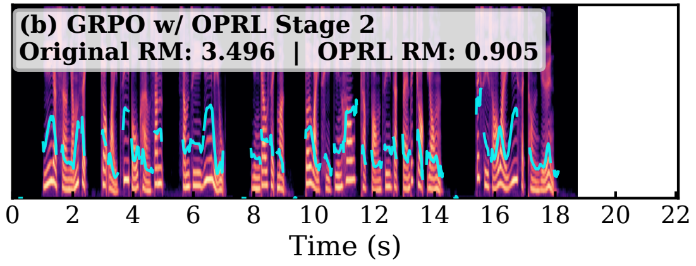
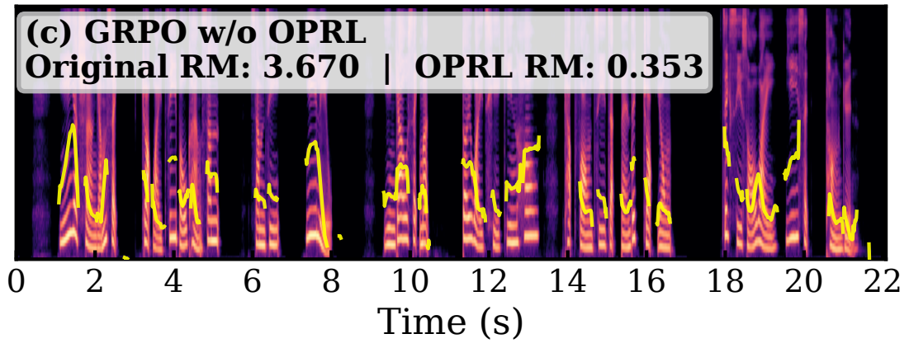

Abstract. Recent advances in text-to-speech (TTS) synthesis have achieved highly natural and expressive speech generation. However, these systems are designed for general adults and overlook older adults’ speech comprehension needs due to age-related sensory and cognitive decline. Prior work involves older adults by collecting preference feedback to tune model parameters. However, obtaining sufficient preference data is costly and difficult, as older adults quickly become fatigued during collection. In this paper, we propose a novel imitation learning (IL) framework to learn TTS models from expert demonstrations. We further improve Group Relative Policy Optimization (GRPO) with on-policy reward learning (OPRL) to mitigate reward hacking under limited supervision from expert demonstrations. Experimental results show that GRPO w/ OPRL outperforms standard GRPO and supervised baselines in objective and subjective metrics.

The original reward model scores the excessively paused speech above the expert recording. After OPRL, the updated reward ranks the expert recording highest and the paused sample lowest.



| Text | Ground Truth | CosyVoice2-Yue | SFT | GRPO w/o OPRL | GRPO w/o OPRL S1 | GRPO w/o OPRL S2 |
|---|---|---|---|---|---|---|
| #1以日常飲食作為滋補強身甚至醫療，研究食物對維持健康及防治疾病的作用，即是所謂醫食同源。 | ||||||
| #2報到手續會依航空公司而有所不同，有時同一航空公司亦會針對不同機場而實施不同的報道手續。 | ||||||
| #3然而部分航空公司對於國內線和歐盟國家的班機，除非旅客需要託運行李，否則唔會要求旅客出示旅遊檔案。 | ||||||
| #4ChatGPT 有時會寫出看似合理。但唔正確或者荒謬嘅答案，喺大語言模型中好常見，稱為人工智能幻覺。 | ||||||
| #5長期處於患病嘅狀態會影響患者嘅身體機能、情緒以及日常嘅生活，以致佢哋生活質素下降，令到患者身心承受唔少嘅壓力。 | ||||||
| #6另外缺損程度較輕嘅長者可以透過輕度缺選長者家居照顧及支援服務,同埋綜閤家居照顧服務,確保佢哋可以接受家居支援嘅服務。 |